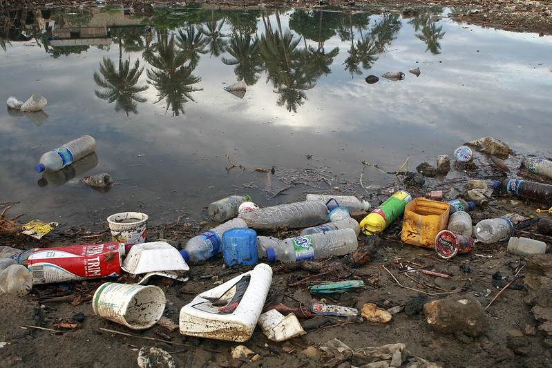

القمامة
النفايات
يتم جمع ما يقدر بنحو11.2 مليار طن من النفايات الصلبة في جميع أنحاء العالم سنويا، ويساهم انحلال النسبة
العضوية من النفايات الصلبة بنحو 5٪ من انبعاثات غازات الدفيئة على الصعيد العالمي.
في حال لا يمكن تجنب النفايات، تساهم إعادة التدوير في توفير كبير في الموارد. يمكن توفير 17 شجرة و 50٪ من
المياه لكل طن من الورق المعاد تدويره.
كما تخلق إعادة التدوير وظائف: يوظف قطاع إعادة التدوير 12 مليون شخص في البرازيل والصين والولايات المتحدة
وحدها.
تم إعادة تدوير 9٪ فقط من إجمالي النفايات البلاستيكية التي تم إنتاجها على الإطلاق. تم حرق حوالي 12٪،
بينما تراكم الباقي، أي 79٪، في مطامر القمامة أو المكبات أو البيئة الطبيعية.
يساعد استخدام زجاجة قابلة لإعادة التعبئة وإحضار حقيبتك الخاصة القابلة لإعادة الاستخدام ومطالبة المطاعم
التي تتردد عليها بالتوقف عن استخدام المصاصات البلاستيكية، في تقليل النفايات البلاستيكية.
يتم شراء مليون زجاجة بلاستيكية للشرب كل دقيقة حول العالم في حين يتم استخدام ما يصل إلى 5 تريليون كيس
بلاستيكي للاستخدام مرة واحدة في جميع أنحاء العالم كل عام. إجمالا، يتم تصميم نصف إجمالي البلاستيك المنتج
للاستخدام مرة واحدة فقط والتخلص منه.
ما بين عام 2010 وعام 2019، ارتفع حجم المخلفات الإلكترونية المتولدة على مستوى العالم من 5.3 إلى 7.3 كجم
للفرد سنويًا. في حين أن نسق التدوير السليم بيئيًا للنفايات الإلكترونية أبطأ بكثير إذ ارتفع من 0.8 إلى
1.3 كيلوغرام للفرد سنويًا.

حل مشكلة القمامة والمخلفات فى 100 يوم؟
المحور الأول:
الحل السريع هولابد من التعاون بين الشباب والحكومة ممثلة فى المحافظة والحى ووزارة البيئة هذا التعاون من
خلال الدعوة للشباب لنزول الشوارع وتنظيف الشوارع مرة أسبوعيا ولتكن يوم الجمعة ولكن بالتعاون مع أجهزة
الدولة بتوفير سيارات القمامة لرفع المخلفات أولا بأول بالتعاون مع الشباب.
وقبل نزول الشباب يوم الجمعة، وليكن الساعة الـ7 صباحا لابد من نزول هيئة النظافة بمعداتها لرفع مخلفات
البناء قبل ازدحام الشوارع صباحا وهذا يراقب من خلال دور وزارة البيئة وهو تواجد مندوب من الوزارة للإشراف
على نظافة لكل حى كما يجب توزيع فلايرز (أوراق) تشرح كيفية التعامل مع المخلفات وأهمية فصل المخلفات وغيرها
من المشاكل البيئية التى يمكن أن يتعامل معها المواطن العادى.
المحور الثانى (وهو جزء من الحل الدائم ويعتمد على الوعى):
لابد من توعية الشارع عن كيفية التعامل مع المخلفات ومعرفة أهميتها فلو نظرنا إلى المخلفات على أساس أنها
مخلفات لا قيمة لها، ولا يمكن التعامل معها ولكن إذا نظرنا إلى الأكياس التى تحتوى على مخلفات منزلية متنوعة
مثل 1- مواد بلاستيك 2- زجاج 3- صفائح مشروبات 4- ورق وكرتون 5- بواقى مأكولات وغيرها، هذه ليست مخلفات،
ولكنها مورد يمكن استخدامه فى إعادة التصنيع ومصدر دخل وفرص عمل لكثير من الناس.
لذلك فصل المخلفات العضوية من المنبع على الأقل فصل المواد العضوية عن غير العضوية، له فائدة ومنفعة لكل
الناس والمجتمع، فمثلا لو أخرج الحى يوميا 1000 طن يحتاج إلى حوالى 120 عربة لرفعها يوميا مع العلم أن ما
يحتاج إلى رفع يومى هو المخلفات العضوية فقط نظرا إلى سرعة تحللها أما المخلفات الأخرى القابلة لإعادة
التدوير يمكن تخزينها إلى أسبوع كامل ونقلها يوم الجمعة فقط صباحا، حيث لا توجد حركة مرورية كثيفة وبالتالى
سوف نحتاج إلى50 عربة فقط نصف أسطول النقل فقط لرفع القمامة اليومية مما يساعد على تخفيف الضغط على شبكة
النقل، ويقل عدد السيارات إلى النصف، والصيانة وتكلفة الوقود ويمكن الاستعانة بسيارات كبيرة مخصصة لجمع
المخلفات غير العضوية يوم الجمعة صباحا حتى لا تؤثر على حركة المرور.
ويضيف شريف بالنسبة للمواد التى تم فرزها 50 % من مخلفات المنازل مواد يمكن إعادة تصنيعها و50 % مواد عضوية
من بواقى الطعام وزراعة، هذه المواد العضوية أيضا يمكن الاستفادة منها من خلال تحويلها لسماد كمبوست للحدائق
أو الأراضى والاستصلاح الزراعى أو يمكن تحويلها إلى غاز ميثان فى المنازل لاستفادة منها كبديل للبوتاجاز
وسبيل لحل أزمة البوتاجاز.
المحور الثالث ( وهو جزء من الحل الدائم ويعتمد القوانين المنظمة والنظام الإدارى القائم):
لابد من الاعتماد على دور الشركات والجمعيات الأهلية الصغيرة التى يمكن أن تتحمل مسئولية تجميع المخلفات من
حى واحد فقط، ويكون أصحاب هذه الشركات أو الجمعيات الأهلية من نفس أهل الحى ويتم الاعتماد على عامل القمامة
الحالى فى التجميع ولكن بعد تأهيله وتعليمه وإتباع أساليب السلامة المهنية فى عملية الجمع مع قيام نفس
الشركة أو الجمعية بعمل ورش لإعادة التدوير وكبس للمخلفات وبيعها للمصانع.
اخيرا توفيق الله